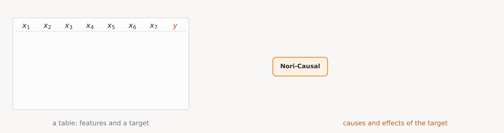
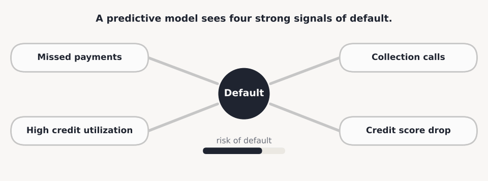

Nori-Causal: Which Features Drive the Target, and Which Follow It

With glass-box models, we showed how Nori can be distilled into simple, readable relationships between the target and its features: which features matter, and how each one moves the prediction. Here we push that intuition one step further. Nori-Causal asks a different question of the same table: for every feature, is it a cause of the target, or an effect of it?
The problem
Feature importance tells you what a model relies on. It does not tell you which way the dependence runs. A feature can be important because it drives the target, or because the target drives it. For prediction, the difference does not matter. For decisions, it is everything: changing a cause changes the outcome, while changing an effect changes nothing.
To a predictive model, the two look the same. Only the direction tells you which one to act on:

Fundamental issues
No real datasets to learn from
Real tables never come with their true causal graph. The experiments that would reveal it are slow, expensive, or unethical, so there is no real data to train or check a causal model on.
Proxies look like drivers
A feature recorded after the outcome can top the importance ranking, and acting on it does nothing.
Causal discovery is slow and fragile
Classic methods search or fit a new model for every dataset, rely on strong assumptions, and slow down quickly as tables get wider.
Our solution: Nori-Causal
How does Nori-Causal work?
Nori-Causal takes a table, with the target as one of its columns, and returns, for every feature, the probability that it is a direct cause of the target and the probability that it is a direct effect. It also scores every pair of features, giving a full map of the table's likely causal structure. There is no per-dataset search or fitting: the answer comes back in a single forward pass.

How do we train it?
We use the same synthetic data engine that trains Nori. Every synthetic table is generated from a causal graph that we chose, so for every table we know exactly which columns cause which. Nori-Causal sees millions of these tables, each with its own graph, mechanisms, noise and size, and learns to read the graph back from the data. It never sees the real datasets it is evaluated on.

Case studies
Credit default
The UCI Credit Default table covers 30,000 card holders: their credit limit, demographics, and six months of repayment status, bills and payments. The target is whether they defaulted the next month, coded as 1 for default and 0 otherwise.

In the glass-box post, the latest repayment status carried most of Nori's predictive signal. Nori-Causal now adds the direction: repayment history is a cause of default, not a consequence of it, which is what a lender needs to know before acting on it. Sex, age and marriage stay below 0.5 in both directions, so Nori-Causal does not treat them as drivers.
Healthcare
The diabetes table follows 442 patients. Ten measurements are taken at baseline: age, sex, BMI, blood pressure and six blood tests. The target is how far the disease has progressed one year later.

Triglycerides and BMI are also the two strongest known predictors in this dataset, and both are plausible drivers of diabetes progression. Nori-Causal names them as causes and does not commit to anything else. The dashed arrows carry a lesson too. Age, sex and blood pressure lean slightly toward being effects of progression, which cannot be right: they were measured a year before the outcome. Nori-Causal sees only the numbers, not what the columns mean or when they were recorded, which is why weak relations are drawn dashed and why the scores are evidence to check, not conclusions.
Try it
Nori-Causal runs inside NoriInterpreter, next to the glass-box workflow:
from synthefy_nori.interpretability import NoriInterpreter
interp = NoriInterpreter(causal=True).fit(X, y)
interp.causal_ranking_ # per feature: p_cause, p_effect, importance
interp.plot_causal_graph() # the target-centred graph shown aboveFor a yes/no target such as default, pass it as 0/1 with task="regression". The weights download from the Hugging Face Hub on first use.
Grab the code, weights, and docs:
- GitHub: github.com/Synthefy/synthefy-nori
- Nori-Causal weights: Nori-Causal on Hugging Face
- Latest Nori weights: Nori 1.5 on Hugging Face
- Docs: docs.synthefy.com/nori, including the glass-box guide
Point Nori-Causal at the dataset you're working on right now and see what drives your target. If you build something interesting, tell us on Discord or at insights@synthefy.com.
What it can't do yet
- It gives probabilities, not a final graph. Turning scores into a decided set of causes is the next step.
- It reads numbers, not meaning. Column names such as "age" or "sex" already rule out some directions. Bringing that knowledge in with a language model is next on our list.
- It works with continuous and 0/1 targets. Targets with several unordered classes are not supported yet.